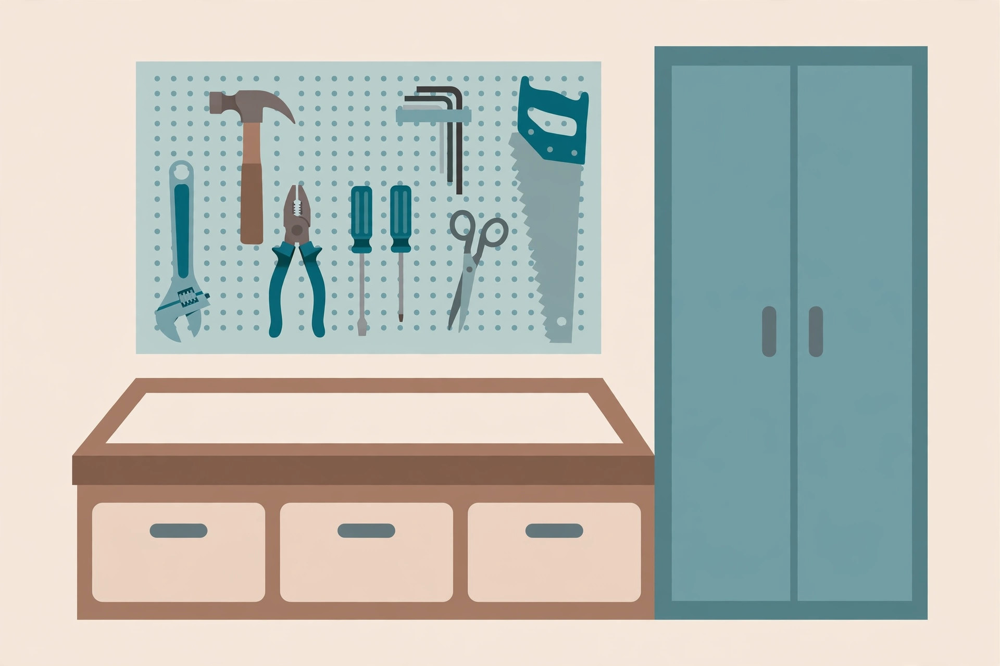

Garage workbench and tool storage: height by task, tools by reach

A workbench fails in a quiet way. Nobody drops it; it just slowly becomes a horizontal shelf where projects, mail, and half-empty paint cans accumulate, while the actual work happens on a sawhorse or the tailgate. Usually the bench itself is not the problem. The height was chosen by whatever was on sale, and the tools were stored wherever they first landed. Fix those two decisions — height matched to the work, tools zoned by how often they are reached for — and the same bench becomes a workstation again.
Choose the height for the work you actually do
Workplace ergonomics guidance does not treat bench height as one standard number. It treats it as a relationship between the surface and your elbows, adjusted for the kind of work. Standing-workstation guidelines put precision work — the kind where you lean in over small parts — at a surface about 4 inches above elbow height. Light work, such as general assembly and mechanical jobs, sits just below elbow height. Heavy work, where you need to push down with real force, drops the surface 4 to 6 inches below elbow height so body weight can do part of the job. An ergonomics summary of bench guidance gives the matching ranges for most of the population: roughly 39 to 43 inches for precision work, 34 to 37 inches for light work, and 28 to 35 inches for heavy work. A workbench-height guide aimed at home users lands in the same neighbourhood: standing tasks typically fall between 36 and 40 inches, and seated tasks between 28 and 30 inches.
The decision framework is therefore short:
- Mostly fine work — electronics, small repairs, model work: aim high, near or above standing elbow height.
- Mostly mixed work — the typical garage blend of repairs, assembly, and maintenance: aim just below elbow height, which for many people is the mid-to-high thirties in inches.
- Mostly heavy work — planing, chiselling, beating on things that deserve it: aim lower, so downward force comes from your weight, not your shoulders.
- Two people, very different heights, one bench: pick the mixed-work height and adapt with a platform to stand on or a raised workpiece block, the same adaptation the standing-workstation guidelines suggest for a non-adjustable surface.
Measure your own standing elbow height before deciding: stand in work shoes, arm relaxed, forearm level, and measure from the floor to the underside of the elbow. That one measurement is worth more than any chart, because it is yours.
Verify the specs before you buy
Spec verification means checking a real product's published dimensions against those ranges instead of admiring its photograph. Take one manufacturer's pegboard workbench workstation as the worked example. Wall Control publishes its workstation at 48 inches wide and 30 inches deep, with the work surface at 37 inches, an overall height of about 69 inches with the pegboard backboard installed, a top 1-1/4 inches thick in high-pressure laminate over an MDF core, and a total workstation weight of 180 lb.
Run that against the framework. A 37-inch surface sits just below elbow height for a mid-height adult, squarely in the light-work band and at the forgiving end of the mixed-work range — a sensible default for a general garage bench, too high for comfortable heavy downward work and too low for dedicated precision work. The 30-inch depth matters as much as the height: deep enough for a project plus tools in front of you, shallow enough that the back of the bench does not become a dead zone where parts go to be forgotten. And the 69-inch overall height is the number to check against your garage door tracks, wall cabinets, and the tallest thing you plan to stand on the bench. None of that is visible in a product photo; all of it is in the spec list, which is why the spec list is where buying decisions should happen.
Zone the tools in reach rings
With the bench placed, storage follows a rule the standing-workstation guidelines state plainly: keep frequently used tools close to and in front of the body, and avoid placing needed tools above shoulder height, below knee height, or behind you. In bench terms, that becomes three rings:
- Ring one — the bench itself and the pegboard directly behind it. The handful of tools you reach for on almost every job: tape measure, utility knife, the common screwdrivers, pliers, a hammer, a flashlight. If a tool is used weekly, it earns a visible, one-handed home here.
- Ring two — drawers and shelves within a step. Job-specific sets: sockets, drill bits, sanding supplies, the multimeter. Grouped by job, in labelled drawers or bins, close enough that fetching them never becomes a search.
- Ring three — cabinets and the rest of the garage. Seasonal, bulky, or hazardous: the tile saw, the paint collection, chemicals that belong in a closed — and where children or pets roam, locked — cabinet, out of the bench zone entirely.
The rings do the same work as the zones elsewhere in the garage, at arm's-length scale: frequency decides distance, and everything outside ring one admits it is not used often enough to deserve prime space.
Pegboard, drawers, or cabinet: a comparison
| Storage | Strengths | Weaknesses | Best contents |
|---|---|---|---|
| Pegboard over the bench | Everything visible; hooks rearrange as the tool set changes; grab-and-return in one motion | Only holds what hangs well; hooks can pop out under a hurried grab; wall of tools can become visual noise | Ring-one hand tools, laid out in the order jobs use them |
| Drawers under or beside the bench | Sets stay together; small parts stop migrating; surface stays clear | Contents invisible — unlabelled drawers become junk drawers within a season | Sockets, bits, blades, fasteners, measuring and marking tools |
| Closed cabinets | Hides clutter; contains dust; can be locked | Slowest access; out of sight can mean forgotten | Chemicals, finishes, power tools in cases, ring-three supplies |
| Open shelf above or beside | Cheap, fast, suits bins and cases | Collects whatever is set down; keep the guideline in mind and store nothing needed above shoulder height if it is heavy | Labelled bins of consumables: sandpaper, tape, gloves, rags |
Most good bench zones use all four, one per ring. The failure mode to avoid is letting the pegboard try to do all of it: a pegboard carrying forty tools is not storage, it is a poster. Twelve tools you use constantly, hung in job order, beat forty hung alphabetically.
Set up the bench zone: numbered procedure
- Measure your standing elbow height in work shoes and pick the surface height from the task framework above.
- Verify any bench you are considering against its published specs — width, depth, surface height, and overall height with any backboard — before buying.
- Place the bench so the work position faces into the room, with light falling over your shoulder onto the surface rather than from behind a door swing or the car's path.
- List your ring-one tools honestly — the ones touched on most jobs — and give only those pegboard space, in the order you reach for them.
- Assign drawers by job, label every drawer front, and put a small parts organiser where bits and fasteners actually get used.
- Move ring-three items to cabinets, chemicals into a closed cabinet, and clear everything else off the surface.
- Work one real project at the bench, note every trip you had to make, and move whatever you fetched twice into a nearer ring.
What success looks like: the surface is empty at the start of a job without a clearing ritual, every tool used in that job was reachable from the bench or one step away, and everything went back to a labelled home in under two minutes.
Keep the surface clear
The last rule is the one that keeps the other six working: the bench surface is workspace, not storage. Projects in progress may live there; finished projects, purchases awaiting a home, and the garage's general overflow may not. A weekly five-minute reset — tools back to their rings, surface wiped, the next project's parts staged in one bin — is cheaper than the monthly excavation that replaces it. A bench that starts every job clear is the difference between a workshop and a table with ambitions.
FAQ
What if the bench is shared by two people of different heights? Set the surface for the taller person's light-work height, and give the shorter person a stable platform to stand on; raising the worker is easier and safer than raising and lowering a loaded bench, and it is the adaptation workplace guidance recommends for fixed surfaces.
Is pegboard or a tool chest better? They do different rings' work. Pegboard wins for the small set of tools grabbed constantly, because it is visible and one-handed. A chest wins for sets and small parts. Most benches need the first and benefit from the second; neither replaces the other.
How deep should the bench be? Deep enough for a project plus a tool row in front of you — the verified example above is 30 inches — and no deeper. Extra depth does not add workspace; it adds a back row where things accumulate out of reach.